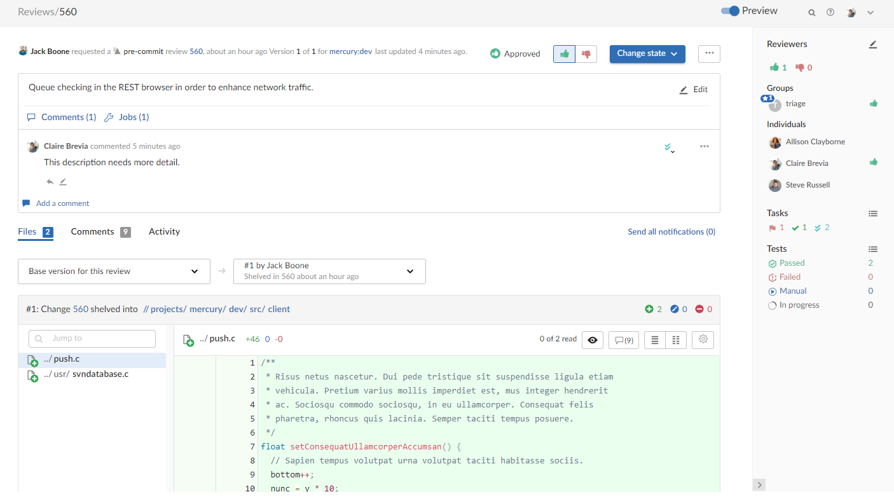

What’s new
This section provides a summary of the notable changes in Swarm for the 2022.1 release. Full details are available in the distribution's RELNOTES.txt file.
Major new functionality
New Swarm review page (preview)
The new Swarm review page introduces some of our most requested features such as syntax highlighting, a new Information panel, a file list, improved markdown support, and more! In essence, the page is completely re-written, so there are many improvements for you to discover. See Review display.
To access the review page preview, use the Preview toggle at the top of the review page. In this way, you can freely switch between the original review page and the new one. The new review page will replace the original page in a later release. The new page is currently missing a few features that will be added in a later release, see Review page (preview) for details. Please share your feedback with us if there is anything you miss from the original review page. For contact details, see Getting help
Help for the original Swarm review page is available in the Swarm 2021.2 documentation, see Review display.

Support for Amazon Linux 2
You can now install Swarm on Amazon Linux 2 using a package, see Install and configure Swarm on Amazon Linux 2.
Swarm support for Helix Core server Extensions
You can now use Helix Core server Extensions instead of triggers to enable Swarm to get event notifications from your Helix Core server. See Helix Core server Extensions dependencies.
API version updated to v11 for this release
For Swarm 2022.1, we have introduced a new set of v11 APIs. These refine and extend the v10 APIs, and further standardize the endpoint and response pattern. The v10 APIs will continue to be available for some time to come
- Any improvements made in the migration to v11 will not be backported to v9 or v10.
- New API endpoints will be created as v11 and will not be backported to v9 or v10.
API version support changing
Support for APIs older than v9 will be removed in the Swarm 2022.2 release.
PHP support changed for Swarm 2022.1
We have removed support for PHP 7.0 and 7.1 for Swarm 2022.1. This is part of our commitment to move away from using versions of platforms that have reached End-of-Life (EOL).
Microsoft Internet Explorer support removed for Swarm 2022.1
We have removed support for Microsoft Internet Explorer for Swarm 2022.1. This is part of our commitment to move away from using platforms that have reached End-of-Life (EOL).
Swarm no longer supports CentOS 8
Swarm 2022.1 does not support Swarm installation on CentOS 8. This is part of our commitment to move away from using versions of platforms that have reached End-of-Life (EOL).
Minor new functionality
New API endpoints
A number of new endpoints have been added to the API, see the Swarm API.
Important information
Swarm no longer supports Ubuntu 16.04
Swarm 2021.1 does not support Swarm installation on Ubuntu 16.04. This is part of our commitment to focus on supported technology platforms.
Swarm no longer supports CentOS 6 and RHEL 6
Swarm 2020.2 does not support Swarm installation on CentOS 6 and RHEL 6. This is part of our commitment to focus on supported technology platforms.
Helix Core server 2020.1 stream spec file permissions change
Helix server 2020.1 and later, permissions have changed for viewing and editing stream spec files in Swarm. To view and edit stream spec files in Swarm, the Swarm user must have admin permissions for the entire depot //...
Trigger script updated for Swarm 2020.1
The swarm.shelvedel shelve-del trigger script has been updated in Swarm 2020.1, the trigger script must be updated in the Helix server trigger table or added if it does not already exist, see Update the Helix server triggers table to run the trigger script.
Custom module support in Swarm 2020.1 and later
The Zend 3 Framework project has been forked to an open source project called Laminas, see https://getlaminas.org/about/. Swarm 2020.1 now uses the Laminas framework, this is part of our commitment to move away from using versions of platforms that have reached End-of-Life (EOL).
If you have existing custom Swarm modules created for Swarm 2019.3 or earlier, you must update them to use the Laminas framework. For instructions on updating your Zend custom modules to Laminas, see Migrate existing custom modules to the Laminas framework.
Upgrading from Swarm 2019.1 and earlier
Swarm 2019.2 introduced a Redis in-memory cache to improve performance and reduce the load on the Helix Core server. This replaces the file-based cache that was previously used by Swarm.
On Swarm systems with a large number of users, groups, and projects, the initial population of this cache can take some time. If you have a large Swarm system you should read through the Redis server connection and configuration options before installing or upgrading Swarm, see Redis server.
API support changing for Swarm User Interface release (2020)
We have started adding a new set of v10 APIs to Swarm. These will provide a new endpoint and response pattern, and are designed for use with the new rich User Interface that is being introduced in 2020. Swarm will continue to support the v9 APIs for some time, see API versions.
API support changed for Swarm 2019.3
APIs older than v9 are being deprecated, support for them will be removed in a future release. See API versions.
Workflow feature support changed for Swarm 2019.2
The Swarm workflow feature is enabled by default. If you are upgrading from an earlier version you will need to update your triggers, see Upgrading Swarm.
PHP and Apache version support changed for Swarm version 2019.1
We have removed support for versions of PHP older than 7.0 in Swarm 2019.1. As a result of this change, support for Apache 2.2 has also been removed. This is part of our commitment to move away from using versions of platforms that have reached End-of-Life (EOL).
Ensure that you can install a supported version of PHP and Apache before upgrading to Swarm 2019.1. For information on versions of PHP and Apache supported by Swarm, see PHP and Apache web server.
P4PHP 2019.1 or later required for Swarm 2019.1 and later
The latest version of P4PHP is included in the Swarm package, OVA, and tarball installations.
Known limitations
Review page (preview)
Swarm 2022.1: Some review page features are not yet supported by the new review page preview. This will be addressed in a later release of Swarm. In the meantime, if you need to use any of the unsupported features, switch back to the original Swarm review page with the Preview toggle. Help for the original Swarm review page is available in the Swarm 2021.2 documentation, see Review display.
The following features are currently not supported in the review page preview UI:
Comments:
-
Comment attachments: you cannot attach files to comments.
-
Comment likes: you cannot add a like to a comment.
-
Linkify to Jiras in comments: Jira cards are not automatically linked in comments.
-
Mark all comments Read/Unread: you cannot mark all comments as read or unread
-
Send all notifications (n): the Send all notifications (n) link is not available.
-
Edited comments: edited comments are not flagged as (edited).
Files tab:
-
Keyboard navigation: you cannot navigate through changes in review files with the N and P shortcut keys.
-
Mark file as read: the Mark file as read button is not sticky and is reset on a page reload.
-
Show full context: the Show full context: button is not available.
-
Open file: the Open file button is not available.
-
File view controls: the Show whitespace, Inline, and Side-by-side view settings are not sticky and are reset on a page reload
-
Show whitespace: is not showing CRLF line endings or tabs correctly
-
3D models: 3D models are not displayed.
-
Images, 3D model, PDFs, Office files: images, 3D model, PDFs, and Office files are not displayed. Only text files are displayed.
Other features:
-
Refresh projects: the refresh project button is not available.
-
Terminating list of files/file if size is too large: we do not limit how many files we display.
-
@mentions: there is a Swarm configurable that limits @mention dropdowns to contain only members of the projects the review is part of. This is not currently supported.
-
Remove a job from a review: you cannot remove a job from a review.
Issue with userids containing a / character
Swarm shelvedel trigger can fail for a specific Windows use case
Unsupported characters in user names and group names in Swarm 2019.2 and later
Swarm support for the "Private editing of streams" feature in Helix server 2019.1 and later
Multiple-Helix server instances on a single Swarm instance
Issue: Swarm will lose connection to all of the Helix servers if you edit the base_url configurable value in the environment block of <swarm_root>/data/config.php. This will stop your system working.
Fix: Remove the base_url configurable from the environment block of <swarm_root>/data/config.php.
Global Dashboard does not support Single Sign-On (Helix Authentication Service)
 in the sidebar or by including the server instance name in the URL, for example: https://swarm.company.com/serverA.
in the sidebar or by including the server instance name in the URL, for example: https://swarm.company.com/serverA. Project Commits tab can fail to show some Helix server commits in the top level view
Individual branch views display the commits correctly.
Swarm OVA installation fails with a Run p4 login2 error
Run p4 login2 error. p4 login2 for a super user account configured for Helix Authentication Service before deploying the Swarm OVA. For p4 login2 detail, see p4 login2 in Helix Core Command-Line (P4) Reference.